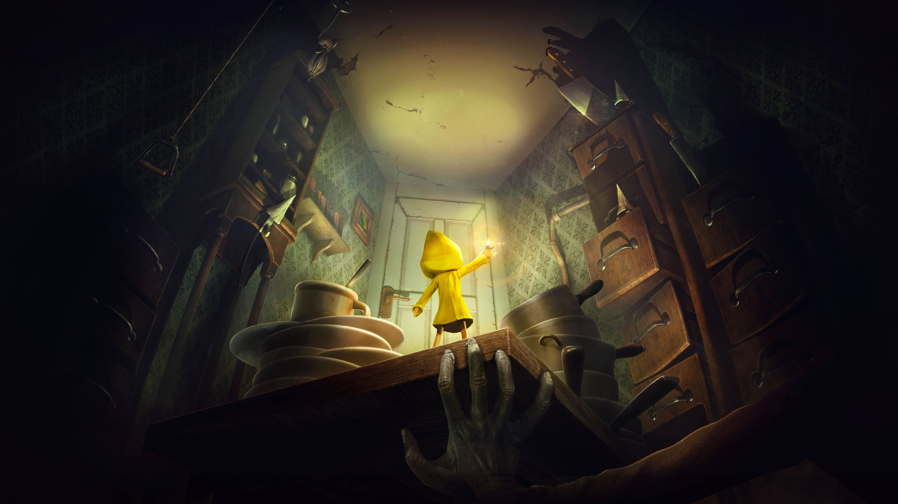

GAME FILE / 005
Little Nightmares
Oversized rooms, creeping silence, and no weapons. Survive by staying small and observant.
01 / THE WORLD
Built to make you feel small.
Every corridor, table, and doorway towers over you. The Maw tells its story without a single spoken line — only sound, shadows, and strange inhabitants.
02 / THE EXPERIENCE
Tension over jump scares.
You cannot fight what hunts you. Progress comes from watching patterns, solving the room, and running before you are caught.
Observe
Study the room, spot climbable ledges, and figure out how to reach the next doorway.
Hide
Slip under tables, stay out of sight, and move only when the path opens.
Escape
When stealth breaks, sprint through tight spaces where one mistake resets the room.
03 / YOUR FIT
Is this your kind of world?
You may enjoy it if...
- You want a focused game you can finish in a weekend.
- You like eerie atmosphere more than loud gore.
- You enjoy figuring things out without text tutorials.
Think twice if...
- Trial-and-error deaths during chases frustrate you.
- Depth perception in 2.5D platforming annoys you.
- You want combat, upgrades, or open-ended freedom.